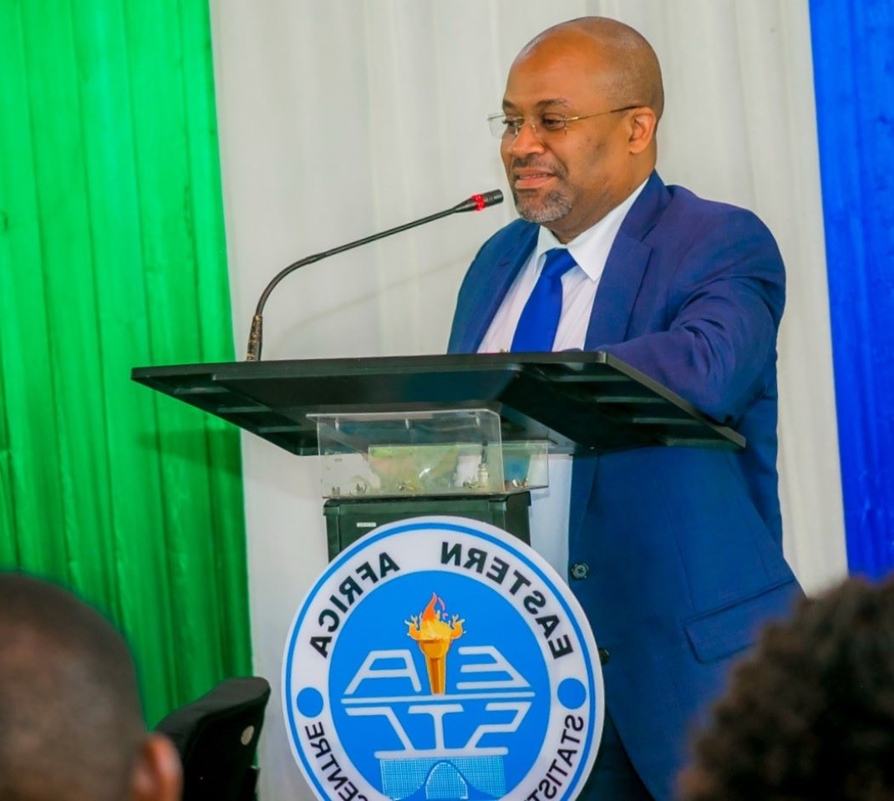

Convocation background
The convocation of the eastern statistical training centre is conducted every year so as to continues the tradition within the academic institution of gathering
together academicians ,students alumni, benefactor and industry professionals as stakeholders of the university community.It is the time to exchange views on topic issues that touch teaching researching and profession development.
In every year the new topic are selected so as to reflect the themes of that specific year.
The Convocation is led by a President, who is elected by the members. The Convocation has an Executive Committee which is the Executive Organ Chaired by the President. This committee is responsible for carrying out the main functions of the Convocation.
The Vice-Chancellor, the Chief Academic Officer and the
Chief Administrative Officer of the University are ex-official members of the Executive Committee. Other members of the Executive Committee are elected every triennium, at an Annual General Meeting (AGM) or nominated in between the election years, by the President of the Convocation where the situation demands. The Executive Committee’s work is supported by sub-committees, precisely embodying an Activities Sub-Committee and a Publications Sub-Committees.